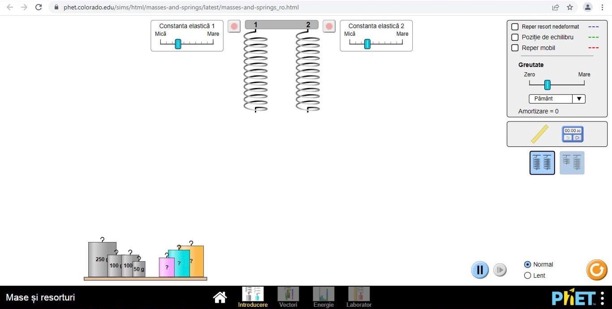
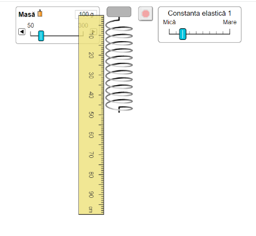

Scopul lucrării: Verificarea legii lui Hooke, determinarea constantei de elasticitate și a masei necunoscute a unui corpului.
Aparate și materiale necesare: O riglă milimetrică (ruletă); un stativ; un resort (sau un fir elastic); un set de mase marcate, un corp cu masă necunoscută.
Remarcă: Lucrarea de laborator poate fi realizată utilizând laboratorul virtual, accesând link-ul:
Laborator Virtual

Consideraţii teoretice: În montajul experimental al acestei lucrări de laborator este utilizat un resort și corpuri cu mase marcate și necunoscute.
Corpul suspendat la capătul de jos al resortului acţionează asupra lui cu o forţă deformatoare egală cu ponderea (greutatea) P = mg. Întrucât în stare de
echilibru forţa de elasticitate este egală în modul și de sens opus cu ponderea, obţinem expresia: P = Fel sau mg = k·Δl, de unde k = mg/kΔl
Puteți viziona acest filmuleț pentru detalii:
MODUL DE LUCRU:
- Măsurați cu rigla lungimea inițială l0 a resortului cu rigiditatea aleasă cu ajutorul comutatorului.

- Alegeți masa unui corp și suspendaţi-l de capătul liber al resortului
- Măsurați cu rigla lungimea finală l
- Determinați alungirea produsă conform relației Δl = l-l0
- Repetaţi experienţa de 5-6 ori adăugând de fiecare dată noi mase marcate
- Introduceţi datele experimentale obţinute în tabelul de mai jos:
| Nr. | m(kg) | l0 (m) | l (m) | Δl1 (m) | K (N/m) | ΔK (N/m) | Δl2(m) | mn(kg) |
|---|---|---|---|---|---|---|---|---|
| 1. | ||||||||
| 2. | ||||||||
| 3. | ||||||||
| 4. | ||||||||
| 5. |
Calcule:
Concluzii: ________________________________________________________________________________________________ ___________________________________________________________________________________________________________ ___________________________________________________________________________________________________________ ___________________________________________________________________________________________________________Întrebări: